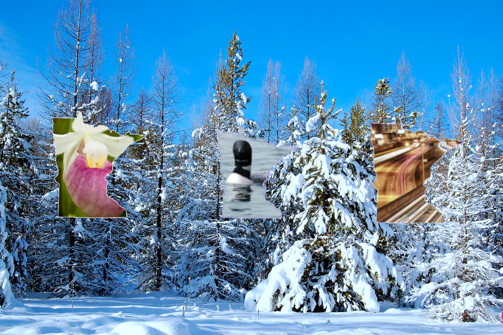
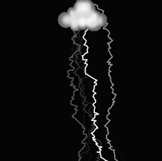

This is my projects page!
To the right you can see my gimp final project. For this project I used various photo editing tools on Gimp to photoshop minnesota symbols into the shape of Minnesota outlines.The symbols I selected include the lady slipper, the Minneapolis skyline, and a loon. The background in which the minnesotas are layered on top of is a scene from a snowy Minnesota winter.
Below
you will find varioius other projects created by Emma.
Click the picture below to see the project in action!
Some of the main challenges of lightning for me was being able to add and size the picture correctly so that the picture was placed on top of the lightning. I was able to fix it by going into gimp and resizing and removing the pictures background. I also edited the picture size and coordinates on processing to position it correctly. My other main issue was making it so the lightning appeared at the rate I wanted it to, but I was also able to fix that by adding a frame count. The last main challenge I faced was converting my code to JavaScript. I was able to do that by getting help from others and looking up things in the p5 reference online.
